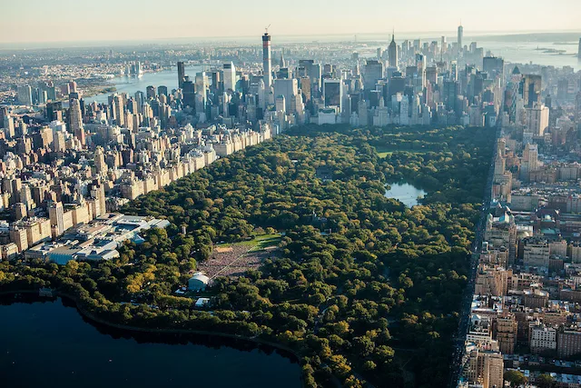

I love New York City, New York because there is always some activity to attend, it could be a concert, a Broadway play or even a sports match. Also, New York City is beautiful due to their massive skycrapers, bridges and other historical buildings.
The New York City Temple is also a unique building and architecture. The building is currently being renovated.
